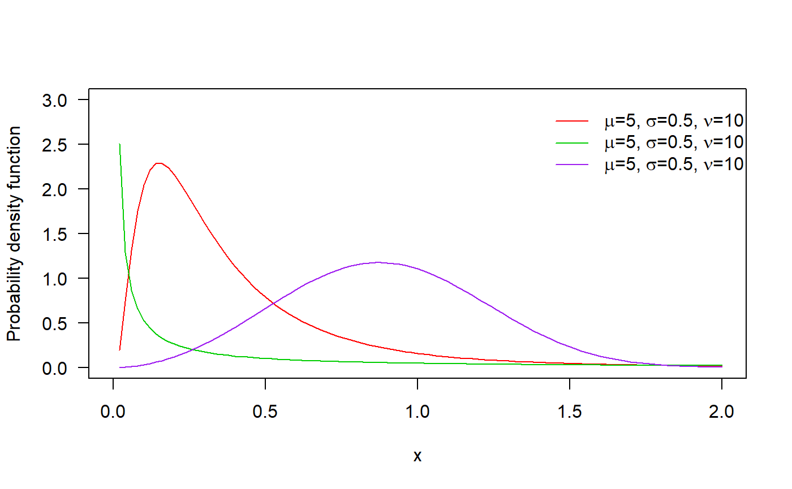
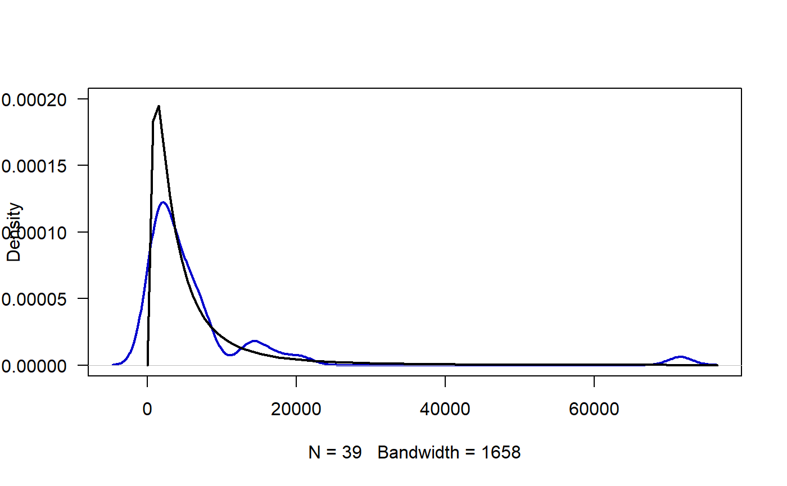
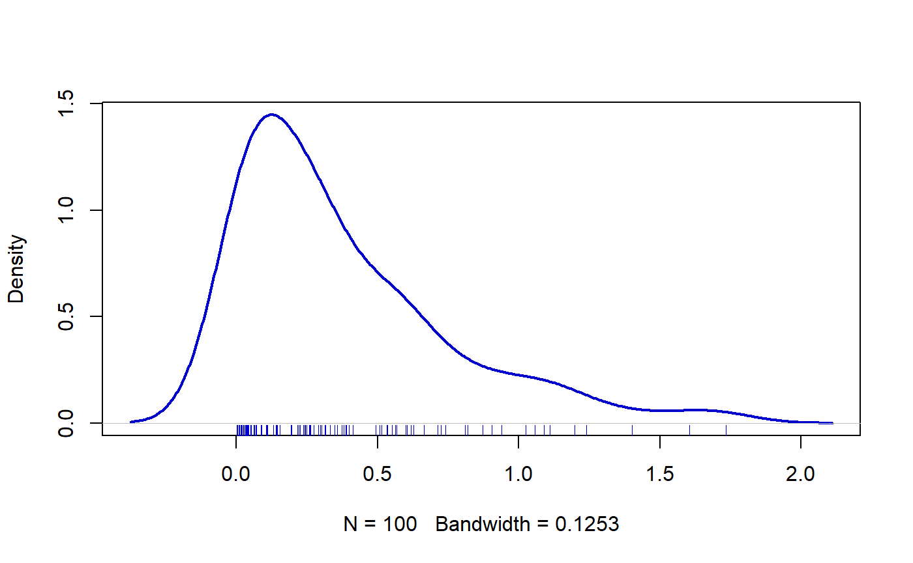

EW_distribution.RmdIn this vignette we explore the family EW family to estimate parameters.
The distribution was proposed by Mudholkar and Srivastava (1993) but in this document we used the parameterization given by Almalki and Nadarajah (2014).
The pdf of the EW distribution is:
\[f(x)=\nu \mu \sigma x^{\sigma-1} e^{-\mu x^{\sigma}} (1-e^{-\mu x^{\sigma}})^{\nu-1}, \quad x>0,\]
where \(\mu\), \(\sigma\), \(\nu\) > 0; \(\mu\) is a scale parameter and \(\sigma\) and \(\nu\) are shape parameters.
For some values of the parameters, the Exponentiated Weibull distribution yiels some known distributions, the next table shows that cases.
| \(\mu\) | \(\nu\) | \(\sigma\) | Distribution |
|---|---|---|---|
| 1 | Weibull | ||
| 2 | Generalized Rayleigh (GR) | ||
| 1 | Generalized Exponential(GE) | ||
| 1 | 1 | Exponential | |
| 1 | 2 | Rayleigh |
The next figure shows possible shapes of the pdf for several values of the parameters:

The Floyd River flood rates are in vector y and the objective is to find the parameter for the exponentiated Weibull distribution.
y <- c(1460, 4050, 3570, 2060, 1300, 1390, 1720, 6280, 1360, 7440,
5320, 1400, 3240, 2710, 4520, 4840, 8320, 13900, 71500, 6250,
2260, 318, 1330, 970, 1920, 15100, 2870, 20600, 3810, 726,
7500, 7170, 2000, 829, 17300, 4740, 13400, 1940, 5660)To estimate the parameter for the exponentiated Weibull distribution we use the next code.
require(gamlss)
mod <- gamlss(y~1, sigma.fo=~1, nu.fo=~1, family='EW',
control=gamlss.control(n.cyc=1500, trace=FALSE))The results for the fitted model can be found below.
exp(coef(mod, what='mu'))
## (Intercept)
## 0.2312972
exp(coef(mod, what='sigma'))
## (Intercept)
## 0.3266889
exp(coef(mod, what='nu'))
## (Intercept)
## 19.0263In the next figure we have the empirical density (blue) and the fitted density (black). We note that the fitted distribution explains better the observed data.
plot(density(y), lwd=2, col='blue3', main='', las=1, ylim=c(0, 0.0002))
curve(dEW(x, mu=0.23, sigma=0.33, nu=19.03),
from=0.01, add=TRUE, lwd=2)
First, we simulate 100 values for the distribution using known parameters.
y <- rEW(n=100, mu=2.0, sigma=1.5, nu=0.5)Next figure shows the density for the y vector.

Now we use the gamlss function from gamlss package to estimate the parameters.
require(gamlss)
mod <- gamlss(y~1, sigma.fo=~1, nu.fo=~1, family='EW',
control=gamlss.control(n.cyc=250, trace=FALSE))To obtain the fitted values for \(\mu\), \(\sigma\) and \(\nu\) we use the inverse link function \(\log()\).
exp(coef(mod, what='mu'))
## (Intercept)
## 2.423505
exp(coef(mod, what='sigma'))
## (Intercept)
## 1.30561
exp(coef(mod, what='nu'))
## (Intercept)
## 0.7310611The results show that estimated parameters are close the true parameters \(\mu\), \(\sigma\) and \(\nu\).